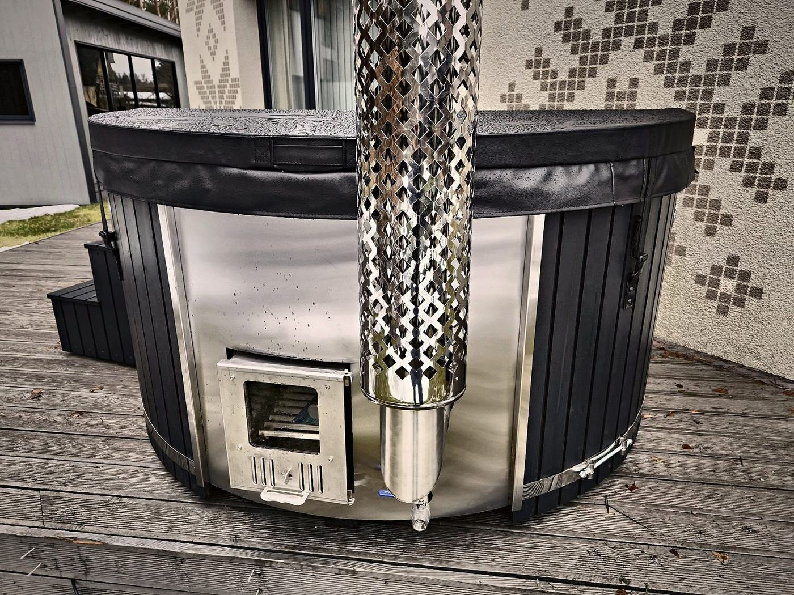

Updated: 10 November 2026

Wooden hot tub, wood-fired hot tub, wood-burning hot tub, hot tub with wood stove, wilderness bath: there are many names for much the same idea, a large heated outdoor bath with room for several people. Behind the names, though, there are two quite different ways of building one. Knowing the difference helps you judge how much care a tub needs and what it is like to live with.
The names in short
A wooden hot tub traditionally means a large tub built from wooden staves, with the water directly against the wood. Wood-fired or wood-burning hot tub describes the heating, not the material: it can mean a traditional wooden tub just as well as a modern tub with a moulded liner. A hot tub with a wood stove today usually means the modern type: a plastic liner holds the water and the wood forms the outside.
So the name matters less than one question: what is the surface that touches the water made of?
Type 1: the traditional wooden tub
In a traditional wooden tub the wood itself is the vessel. The water is in direct contact with the wood, which soaks it up and swells until it is watertight. Many people love this very natural character and the smell of the wood.
The downside: wood that stands in water all the time needs a lot of attention. If such a tub stays empty for a while and dries out, it can leak until the wood has swollen again. The open-pored surface is also harder to clean thoroughly than a smooth liner.
Type 2: the hot tub with a wood stove and liner
Our hot tubs separate the two jobs: a liner made of acrylic or gelcoat holds the water, and the outer cladding of thermowood or WPC gives the tub its natural look. Stainless steel bands hold the cladding together, and a stainless steel wood stove heats the water.
That way the wood is not in permanent contact with the bath water. The liner is smooth, pleasant on the skin and easy to keep clean with clean water and a soft damp cloth. Seats can also be moulded into the liner; with us you choose between several inner shapes.
The differences at a glance
Hygiene and cleaning
A smooth acrylic or gelcoat liner is easier to clean than open-pored wood. Rinse off residues of sun cream, oils and soap regularly with clean water; cleaning products, solvents and scouring pads must not be used.
Caring for the wood
On a hot tub with a liner, the wood is only exposed to the weather from the outside. Thermowood should be oiled about once a year; WPC needs hardly any care.
Comfort and features
Moulded seats, hydro and air massage jets, LED lighting in the liner wall or a thermometer fit neatly into a liner. On our hot tubs you put these features together in the configurator.
Heating
The heating principle is the same for both types: a wood stove warms the water without any mains connection. The main difference is where the stove sits.
The wood stove: stainless steel, output and safety
With either type, the stove is the heart of the hot tub. Our stoves are made of stainless steel, either AISI 304 or the especially corrosion-resistant AISI 316. You choose between 20 kW and 30 kW output and a stove door with or without a window. A spark arrestor is always fitted to the chimney so that sparks do not land on your deck or garden. An optional chimney guard protects hands and clothing from the hot pipe.
The same basic rules apply to every hot tub with a wood stove: always fill with water first, then light the fire; burn only dry firewood; never leave the stove burning unattended; keep children away from hot surfaces.
Stove inside or outside?
An external stove stands next to the tub and is connected to it by pipes. This leaves more room in the tub, and the stove and ash are easy to reach. An internal stove sits inside the tub behind a wooden guard and saves space next to the tub.
Which option is possible depends on the inner shape you choose. With us:
- Shape 1 is designed for an external stove; an internal stove is possible with this shape at extra cost.
- Shape 2 and Shape 3 come with an internal stove only.
- Shape 4 comes with an external stove only.
If you don't want an open fire, or are not allowed one, you can choose a 9 kW electric heater instead of the wood stove. There is then no fire and no chimney, but a power supply is needed.
Which type suits whom?
The traditional wooden tub suits people who want the most original experience and are happy to look after the wood regularly.
The hot tub with a liner and wood stove suits everyone who wants the atmosphere of wood and fire but prefers little maintenance, an easy-to-clean surface and comforts such as massage or lighting. This is exactly the type we build in our own workshop in Lithuania.
Which liner and which wood suit you is explained in our guide Thermowood, acrylic or gelcoat. What else to look out for when buying is covered in Buying a wood-fired hot tub.
Frequently asked questions
Is a wooden hot tub the same as a hot tub with a wood stove?
Both are large heated outdoor baths. "Wooden hot tub" usually means the traditional type where the water touches the wood; "hot tub with a wood stove" usually means the modern type with a plastic liner and wooden cladding.
Does the water touch the wood in your hot tubs?
No. The water is held in a liner made of acrylic or gelcoat. The wood forms the outer cladding.
Can I have a hot tub without a wood stove?
Yes. Instead of the wood stove you can choose a 9 kW electric heater. It needs a power supply, which must be installed by a qualified electrician.
Which stove position is better?
That depends on your space and the inner shape. An external stove leaves more room in the tub; an internal stove saves space next to it. The configurator shows which inner shape goes with which stove position.